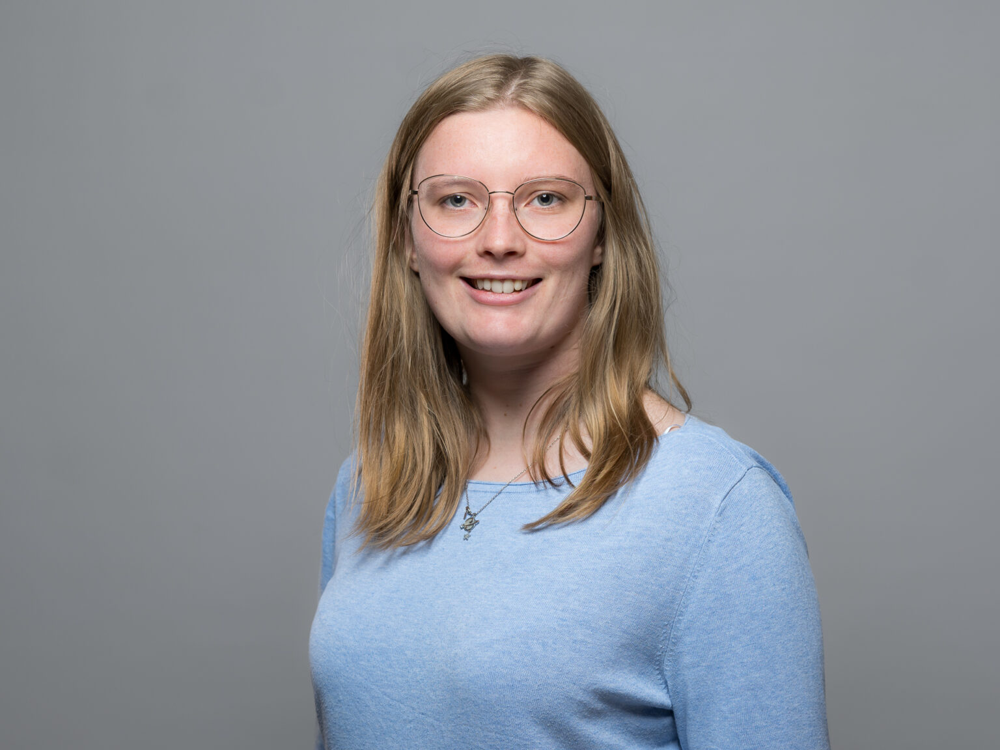

Currently, I am a PhD student in the probability group within the mathematical institute of the University of Freiburg.
I am member of the CRC Small Data.
Abteilung für Mathematische Stochastik
Albert-Ludwigs University of Freiburg
Ernst-Zermelo-Straße 1
Room 231
D - 79104 Freiburg

My Orcid profile is here.